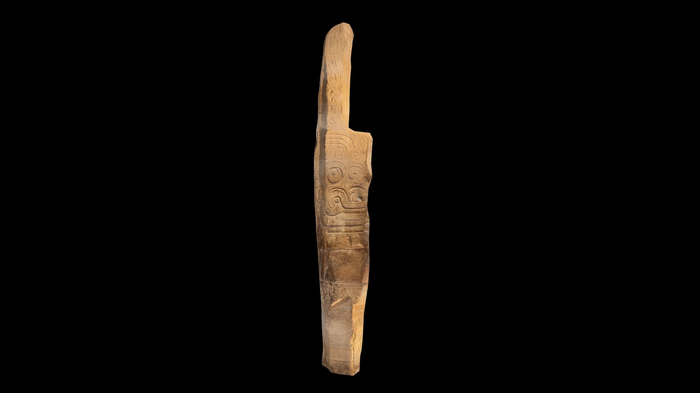
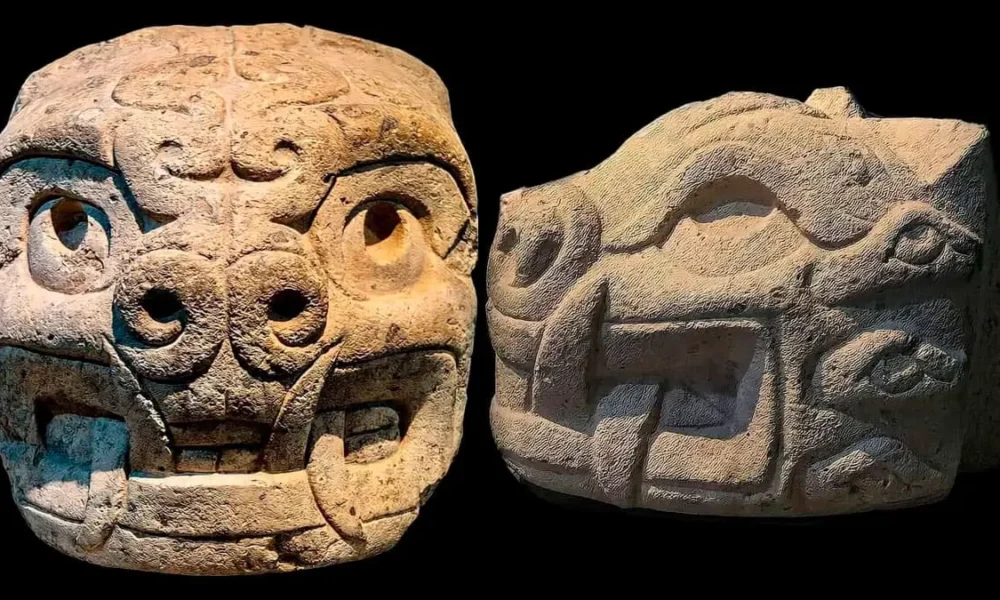
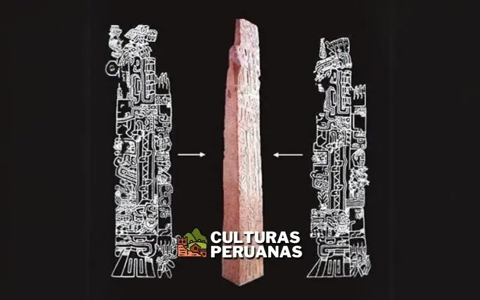
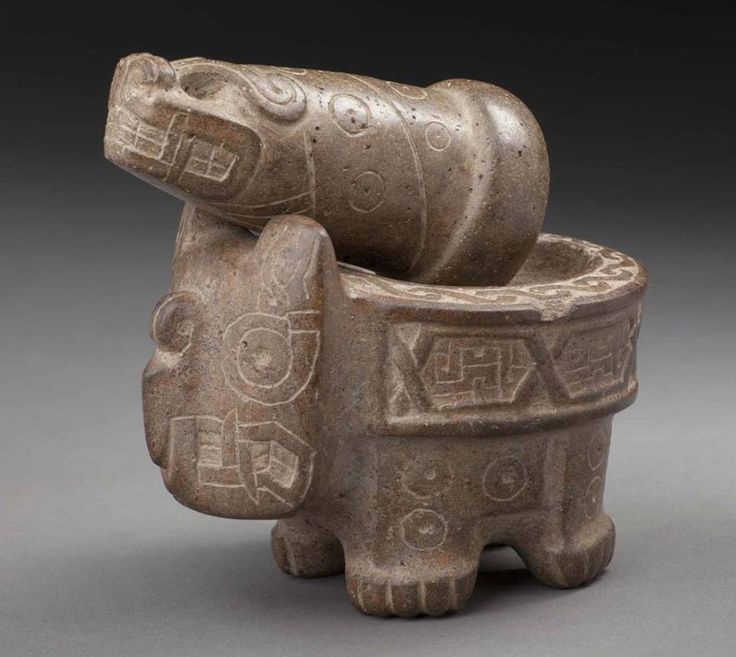
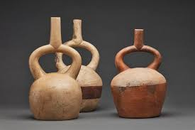
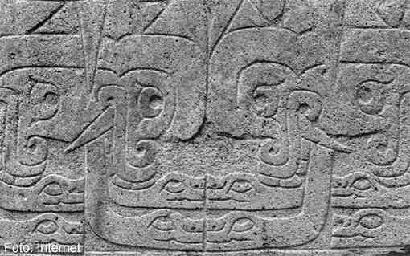
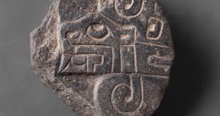
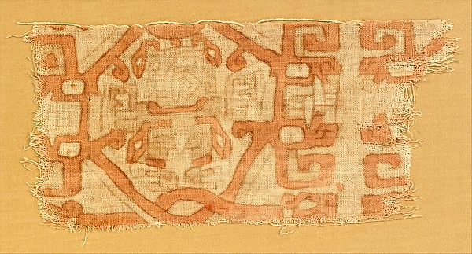

Galería de la Civilización Chavín
Explora la riqueza visual del arte y la cultura Chavín.

Lanzón Monolítico
Escultura central en el Templo Antiguo, representa una deidad principal.

Cabezas Clavas
Esculturas de piedra con rostros míticos, adornaban muros del templo.

Obelisco Tello
Monolito tallado con complejas escenas mitológicas.

Mortero Chavín
Mortero ceremonial con decoración zoomorfa.

Cerámica Asa Estribo
Botella de cerámica con asa distintiva y decoración incisa.

Relieve en Muro
Representación de una deidad antropomorfa con rasgos felinos.

Escultura de Serpiente
Motivo recurrente en el arte Chavín, simboliza poder y conexión.

Fragmento Textil
Evidencia de la textilería con diseños iconográficos Chavín.
Una mirada a las expresiones artísticas de la civilización Chavín.